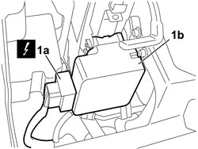
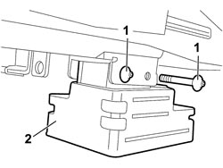

5580E17 STEERING LOCK - R.R
- Path
- Procedures > 55 ELECTRICAL EQUIPMENT > 5580 SPECIAL ACCESSORIES > 5580E ANTI-THEFT DEVICE > 5580E17 STEERING LOCK - R.R
- Kind
- repair procedure (removal / refitting; the operation number is the code)
- Applies to
- all engines; all production periods
- Interactive page
- https://sloeber94.github.io/elrnDB-fCrm/en/#/194000816
Applies to: all engines; all production periods
- Turn the ignition key to the OFF position and extract it.
- Disconnect the battery leads and insulate them.
- Wait for 10 minutes before continuing.
Description | Connector | |
|---|---|---|
BATTERY |
Applies to: all engines; all production periods
 Removing
Removing
 Refitting
RefittingOp. 7040A24 LOWER FACIA COVER TRIM - R+R
Op. 7040A26 STEERING COLUMN TRIM - R+R
Op. 7040A44 LEFT DASHBOARD SIDE TRIM - R.R.
Op. 5010C57 LEFT LOWER AIR DIFFUSER - R R
Op. 5580C23 DRIVE SIDE KNEE PROTECTION AIR BAG MODULE R. R.
1. Release the safety mounting and disconnect the electrical connection (1a) from the steering lock (1b).
Description | Connector | |
|---|---|---|
1a | STEERING LOCK CONTROL UNIT (NBS) |

Applies to: all engines; all production periods
1. Using a drift, undo the bolts without a head fixing the steering lock.
2. Remove the steering lock from the steering column.

Applies to: all engines; all production periods
Refitting
Removing- Position the steering lock on the steering column and secure it tightening the fixing bolts until the hexagonal head breaks.
- Connect the electrical connection and tighten the safety mounting.
- Connect the negative and positive battery terminals.
Description | Connector | |
|---|---|---|
BATTERY |
- Check the operation of the system using the Examiner.
Topics linked from this page (8)
- 5010C57 LEFT LOWER AIR DIFFUSER - R R
- 5580C AIR BAG SYSTEM
- 5580C23 DRIVE SIDE KNEE PROTECTION AIR BAG MODULE R. R.
- 7040A24 LOWER FACIA COVER TRIM - R+R
- 7040A26 STEERING COLUMN TRIM - R+R
- 7040A44 LEFT DASHBOARD SIDE TRIM - R.R.
- A001 BATTERY
- M089 STEERING LOCK CONTROL UNIT (NBS)
Topics that link to this page (14)
- B001 IGNITION SWITCH NOT WORKING
- B007 IGNITION KEY CANNOT BE ACKNOWLEDGED
- H040 THE ELECTRIC STEERING LOCK DOES NOT RELEASE (VEHICLE WITH PASSIVE ENTRY)
- H041 STEERING DOES NOT LOCK WITH KEY EXTRACTED
- 5580ED ELECTRONIC STEERING LOCK CHECK
- 5580ED ELECTRONIC STEERING LOCK CHECK
- 5040C10 AIR CONDITIONING CASING - R.R
- 5040C50 AIR CONDITIONING HEATER RADIATOR - R.R.
- 5040C64 A/C EVAPORATOR - R+R
- 5040D80 AIR CONDITIONER SYSTEM WIRING BUNDLE - R R OR REPLACE
- 5040D94 AIR CONDITIONING LEFT UPPER AIR DISTRIBUTION FLAP MOTOR (DEFROST) - R.R
- 5505C10 FRONT CROSSMEMBER WIRING - R.R
- 5505C31 BUILT-IN WIRING UNDER DASHBOARD - R.R.
- 7040A97 INSTRUMENT PANEL TRIM SUPPORTING CROSSMEMBER - R.R